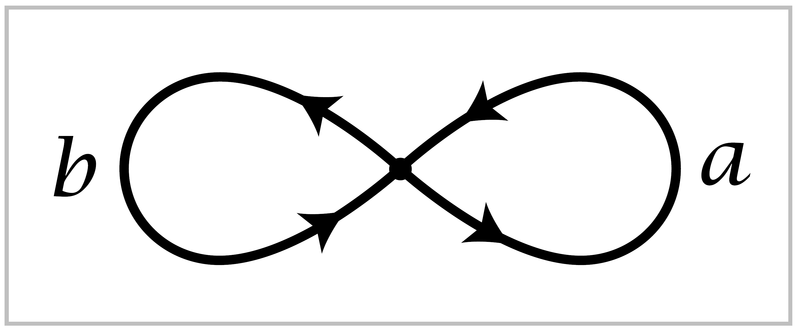

1.3. Covering Spaces#
We come now to the second main topic of this chapter, covering spaces. We have laready encountered these briefly in our calculation of \(\pi_1(S^1)\) which used the example of the projection \(\mathbb{R} \rightarrow S^1\) of a helix onto a circle. As we will see, covering spaces can be used to caluculate fundamental groups of other spaces as well. But the connection between the fundamental group and covering spaces runs much deeper than this, and in many ways they can be regarded as two viewpoints toward the same thing. Algebraic aspects of the fundamental group can often be translated into the geometric language of covering spaces. This is exemplified in one of the main results in this section, an exact correspondence between connected covering spaces of a given space \(X\) and subgroups of \(\pi_1(X)\). This is strikingly reminiscent of Galois theory, with its correspondence between field extensions and subgroups of the Galois group.
Let us recall the definition. A covering space of a space \(X\) is a space \(\tilde{X}\) together with a map \(p: \tilde{X} \rightarrow X\) satisfying the following condition: Each point \(x \in X\) has an open neighborhood \(U\) in \(X\) such that \(p^{-1}(U)\) is a union of disjoint open sets in \(\tilde{X}\), each of which is mapped homeomorphically onto \(U\) by \(p\). such a \(U\) is called evenly covered and the disjoint open sets in \(\tilde{X}\) that project homeomorphically to \(U\) by \(p\) are called sheets of \(\tilde{X}\) over \(U\). If \(U\) is connected these sheets are the connected components of \(p^{-1}(U)\) so in this case they are uniquely determined by \(U\), but when \(U\) is not connected the decomposition of \(p^{-1}(U)\) into sheets may not be unique. We allow \(p^{-1}(U)\) to be empty, the union of an empty collection of sheets over \(U\), so \(p\) need not be surjective. The number of sheets over \(U\) is the cardinality of \(p^{-1}(x)\) for \(x \in U\). As \(x\) varies over \(X\) this number is locally constant, so it is constant if \(X\) is connected.
An example related to the helix is the helicoid surface \(S \subset \mathbb{R}^3\) consisting of points of the form \((s \cos 2\pi t, s \sin 2 \pi t, t)\) for \((s,t) \in (0, \infty) \times \mathbb{R}\). This projects onto \(\mathbb{R}^2 - \{0\}\) via the map \((x,y,z) \mapsto (x,y)\), and this projection defines a voering space \(p:S \rightarrow \mathbb{R}^2 -\{0\}\) since each point of \(\mathbb{R}^2 - \{0\}\) is contained in an open disk \(U\) in \(\mathbb{R}^2-\{0\}\) with \(p^{-1}(U)\) consisting of countably many disjoint open disks in \(S\) projecting homeomorphically onto \(U\).
{kind=link}
Another example is the map \(p:S^1 \rightarrow S^1,\, p(z)=z^n\) where we view \(z\) as a complex number with \(|z| = 1\) and \(n\) is any positive integer. The closest one can come to realizing this covering space as a linear projection in \(3\)-space analogous to the projection of the helix is to draw a circle wrapping around a cylinder \(n\) times and intersecting itself in \(n-1\) points that one has to imagine are not really intersections. For an alternative picure without this defect, embed \(S^1\) in the boundary torus of a sloid torus \(S^1 \times D^2\) so that it winds \(n\) times monotonically around the \(S^1\) factor without self-intersections, then restrict the projection \(S^1 \times D^2 \rightarrow S^1 \times \{0\}\) to this embedded circle. The figure for Example 1.29 in the preceding section illustrates the case \(n=3\).
These \(n\)-sheeted covering spaces \(S^1\rightarrow S^1\) for \(n \geq 1\) together with the infinite-sheeted helix example exhaust all the connected coverings spaces of \(S^1\), as our general theory will show. There are many other disconnected covering spaces of \(S^1\), such as \(n\) disjoint circles each mapped homeomorphically onto \(S^1\), but these disconnected covering spaces are just disjoint unions of connected ones. We will usually restrict our attention to connected covering spaces as these contain most of the interesting features of covering spaces.
The covering spaces of \(S^1 \vee S^1\) form a remarkably rich family illustrating most of the general theory very concretely, so let us look at a few of these covering spaces to get an idea of what is going on. To abbreviate notation, set \(X = S^1 \vee S^1\).
{kind=link}
We view this as a graph with one vertex and two edges. We label the edges \(a\) and \(b\) and we choose orientations for \(a\) and \(b\). Now let \(\tilde{X}\) be any other graph with four ends of edges at each vertex, as in \(X\), and suppose each edge of \(\tilde{X}\) has been assigned a label \(a\) or \(b\) and an orientation in such a way that the local picture near each vertex is the same as in \(X\), so there is an \(a\)-edge end oriented toward the vertex, and a \(b\)-edge end oriented away from the vertex. To give a name to this structure, let us call \(\tilde{X}\) a \(2\)-oriented graph.
The table on the next page shows just a small sample of the infinite variety of possible examples.
Given a \(2\)-oriented graph \(\tilde{X}\) we can construct a map \(p:\tilde{X} \rightarrow X\) sending all vertices of \(\tilde{X}\) to the vertex of \(X\) and sending each edge of \(\tilde{X}\) to the edge of \(X\) with the same label by a map that is a homeomorphism on the interior of the edge and preserves orientation. It is clear that the covering space condition is satisfied for \(p\). Conversely, every covering space of \(X\) is a graph that inherits a \(2\)-orientation from \(X\).
As the reader will discover by experimentation, it seems that every graph having four edge ends at each vertex can be \(2\)-oriented. This can be proved for finite graphs as follows. A very clasical and easily shown fact is that every finite connected graph with an even number of edge ends at each vertex has an Eulerian circuit, a loop traversing each edge exactly once. If there are four edge ends at each vertex, then labeling the edges of an Eulerian circuit alternately \(a\) and \(b\) produces a labeling with two \(a\)-edge ends and two \(b\)-edge ends at each vertex. The union of the \(a\) edges is then a collection of disjoint circles, as is the union of the \(b\) edges. Choosing orientations for all these circles gives a \(2\)-orientation. It is a theorem in graph theory that infinite graphs with four edge ends at each vertex can also be \(2\)-oriented; see Chapter 13 of [König 1990] for a proof. There is also ga generalization to \(n\)-oriented graphs, which are covering spaces of the wedge sum of \(n\) circles.
{kind=link}
A simply-connected covering space of \(X=S^1 \vee S^1\) can be constructed in the following way. Start with the open intervals \((-1,1)\) in the coordinate axes of \(\mathbb{R}^2\).
{kind=link}
Next, for a fixed number \(\lambda,\, 0<\lambda \frac{1}{2}\), for example \(\lambda = \frac{1}{3}\), adjoin foru open segments of length \(2\lambda\), at distance \(\lambda\) from the ends of the previous segments and perpendicular to them, the new shorter segments being bisected by the older ones. For the third stage, add perpendicular open segments of length \(2\lambda^2\) at distance \(\lambda ^2\) from the endpoints of all the previous segments and bisected by them. The process is now repeated indefinitely, aht the \(n^{th}\) stage adding open segments of length \(2\lambda^{n-1}\) at distance \(\lambda^{n-1}\) from all the previous endpoints. The union of all these open segments is a graph, with vertices the intersection points of horizontal and vertical segments, and edges the subsegments between adjacent vertices. We label all the horizontal edges \(a\), oriented to the right, and all the vertical edges \(b\), oriented upward.
This covering space is called the universal cover of \(X\) because, as our general theory will show, it is a covering space of every other connected covering space of \(X\).
The covering spaces (1)-(14) in the talbe are all nonsimply-connected. Their fundamental groups are free with bases represented by the loops specified by the listed words in \(a\) and \(b\), starting at the basepoint \(\tilde{X}_0\) indicated by the heavily shaded vertex. This can be proved in each case by applying van Kampen’s theorem. One can also interpret the list of words as generators of the image subgroup \(p_*(\pi_1(\tilde{X}, \tilde{x}_0))\) in \(\pi_1(X,x_0)=\langle a,b \rangle\). A general fact we shall prove about covering spaces is that the induced map \(p_*:\pi_1(\tilde{X},\tilde{x}_0) \rightarrow \pi_1(X,x_0)\) is always injective. Thus we have the at-first-glance paradoxical fact that the free group on two generators can contain as a subgroup a free group on any finite number of generators, or even on a countably infinite set of generators as in examples (10) and (11).
Changing the basepoint vertex changes the subgroup \(p_*(\pi_1(\tilde{X},\tilde{x}_0))\) to a conjugate subgroup in \(\pi_1(X,x_0)\). The conjugating element of \(\pi_1(X,x_0)\) is represented by any loop that is the projection of a path in \(\tilde{X}\) joining one basepoint to the other. For example, the covering spaces (3) and (4) differ only in the choice of basepoints, and the corresponding subgroups of \(\pi_1(X,x_0)\) differ by conjugation by \(b\).
The main classification theorem for covering spaces says that by associating the subgroup \(p_*(\pi_1(\tilde{X},\tilde{x}_0))\) to the covering space \(p: \tilde{X} \rightarrow X\), we obtain a one-to-one correspondence between all the different connected covering spaces of \(X\) and the conjugacy classes of subgroups of \(\pi_1(X,x_0)\). If one keeps tract of the basepoint vertex \(\tilde{x}_0 \in \tilde{X}\), then this is one-to-one correspondence between covering spaces \(p:(\tilde{X}, \tilde{x}_0) \rightarrow (X, x_0)\) and actual subgroups of \(\pi_1(X, x_0)\), not just conjuugacy classes. Of course, for these statements to make sense one has to have a precise notion of when two covering spaces are the same, or ‘isomorphic’. In the case at hand, an isomorphism between covering spaces of \(X\) is just a graph isomorphism that preserves the labeling and orientations of edges. Thus the covering spaces in (3) and (4) are isomorphic, but not by an isomorphism preserving basepoints, so the two subgroups of \(\pi_1(X,x_0)\) corresponding to these covering spaces are distinct but conjugate. On the other hand, the two covering spaces in (5) and (6) are not isomorphic, though the graphs are homeomorphic, so the corresponding subgroups of \(\pi_1(X, x_0)\) are isomorphic but not conjugate.
Some of the covering spaces (1)-(14) are more symmetric than others, where by a ‘symmetry’ we mean a automorphism of the graph preserving the labeling and orientations. The most symmetric covering spaces are those having symmetries taking any one vertex onto any other. The examples (1), (2), (5)-(8), and (11) are the ones with this property. We shall see that a covering space of \(X\) has maximal symmetry exactly when the corresponding subgroup of \(\pi_1(X,x_0)\) is a normal subgroup, and in this case the symmetries form a group isomorphic to the quotient group of \(\pi_1(X,x_0)\) by the normal subgroup. Since every group generated by two elements is a quotient group of \(\mathbb{Z}*\mathbb{Z}\), this implies that every two-generator group is the symmetry group of some covering space of \(X\).